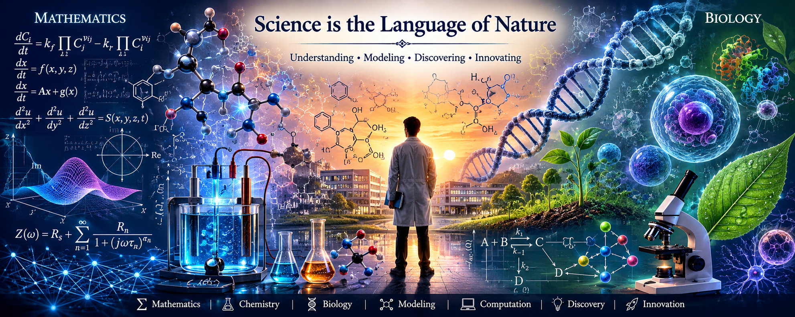
NIMS Postdoctoral Researcher
National Institute for Materials Science (NIMS), Japan
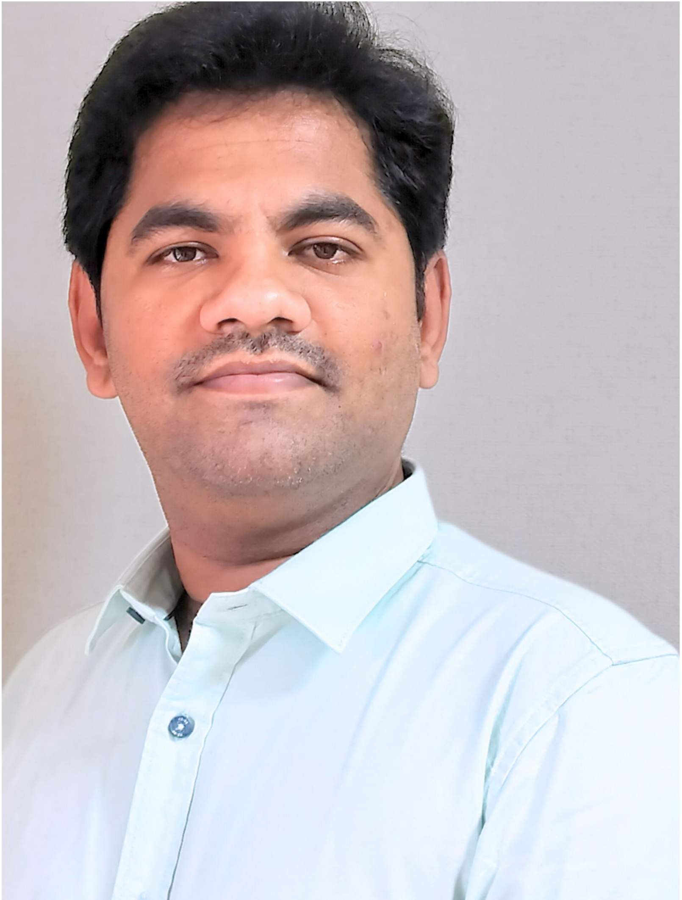
I am an interdisciplinary researcher with a strong background in applied mathematics, chemical kinetics, and chemical reaction networks. Currently, I am a postdoctoral researcher at the National Institute for Materials Science (NIMS), Japan, where I develop accurate mathematical models and analytical formulations to predict the properties and dynamics of complex, nonlinear chemical systems.
My doctoral research was in chemical graph theory, focusing on predicting the physicochemical properties of metamaterials and drug-related structures. The central contribution of that work was using regression analysis to evaluate a wide range of topological indices and identify those with the strongest predictive power for the physicochemical properties of several important classes of molecular structures.
Across both my doctoral and postdoctoral work, a single thread runs through everything: the analysis of chemical reaction networks. I am passionate about leveraging mathematical tools to gain deeper insight into chemical processes and to contribute to advances in materials science and related disciplines.
The greatest discoveries are made at the boundaries between disciplines, where different ways of thinking come together to reveal new understanding.
My current postdoctoral research concerns predicting the kinetic properties of chemical reaction networks in champion materials, using mathematical modelling based on ordinary differential equations (ODEs) and graph theory. Although the systems and fields differ, all of my projects rest on the same core framework: the analysis of chemical reaction networks.
I represent molecules and crystals as graphs and design fast algorithms to describe their structure. These algorithms give counting polynomials and distance-based descriptors for boric acid, aluminophosphates and fullerene cages. I relate these descriptors to the NMR and ESR spectral patterns of boric acid nanosheets. I then use them in quantitative structure–property relationship (QSPR) and machine-learning models. These models predict the properties of drugs and graphene nanoribbons.
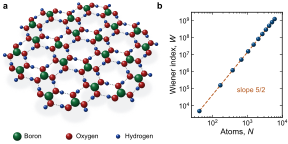
How did the first chemical networks begin to amplify themselves? I study this by writing protometabolism in an open system as a reaction network of ordinary differential equations (ODEs). From this model I derived the rate at which autocatalysis amplifies itself in linear networks. This rate shows when a catalytic network grows and keeps itself alive, and when it fades away. A manuscript on this result is under minor revision at Physical Review E. This gives a clear kinetic test for self-sustaining chemistry.
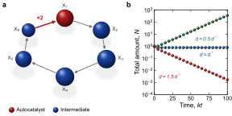
Across all my projects, I turn a reaction network into equations that I can solve and interpret. I developed methods that estimate how long an autocatalytic network survives. I also separate the dynamics of linear networks into their individual timescales. These methods rest on linear algebra, stability analysis and timescale analysis. I implement and test them in Python and Mathematica, and apply them to the origin of life and electrochemistry. These tools let me compare different systems in one framework.
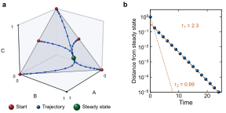
An impedance spectrum carries the kinetics of every step in a catalytic reaction. I build analytical microkinetic models that read this kinetic information for multi-step reactions. By solving the kinetic ODEs, I obtained a formula for the surface coverage. From it I derived a new equation for fitting electrochemical impedance spectroscopy (EIS) data. The resulting impedance spectra and Bode plots connect directly to the kinetic timescales of a catalyst. I also simulate and fit spectra numerically.
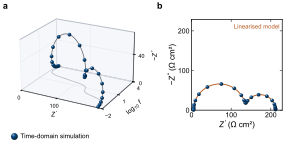
I use AI tools as a regular part of my research and software work. I direct agentic coding tools such as Claude Code to build programs from specifications that I write. I built a no-code graphical tool this way, and it is now under peer review. I defined every algorithm and feature in it myself. I also use AI assistants to draft and review code, derivations and manuscripts. I never accept an output unchecked. I validate each one against analytical results, numerical tests or known reference values.
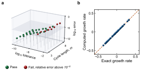
I build open software that makes molecular descriptors easy to compute and check. PyTIE is a Python program of four packages. It calculates degree-based topological descriptors and molecular entropy from molecular graphs, and its code is on GitHub. The method is described in an arXiv preprint. PyTIE automates calculations that are slow and error-prone by hand, so large sets of molecules can be analysed quickly. Because the code is open, other researchers can reuse it, check it and extend it.
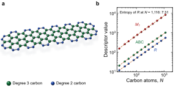
Each card uses a simple picture and a plain-language note, so the tools and methods make sense even to readers outside my field.
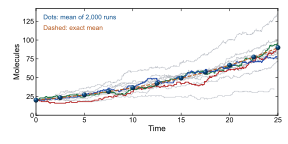
I write computer programs that run the mathematical models and simulations behind my research.
Python · C++ · Java · HTML · CSS
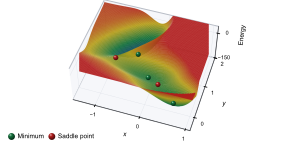
Specialised tools for heavy calculation, symbolic mathematics, and preparing scientific documents.
MATLAB · Mathematica · Chemcraft · LaTeX · Flash8
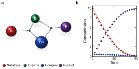
The mathematical techniques I use to describe how chemicals react and change over time.
ODE modelling · reaction networks · graph theory · QSPR · machine learning · impedance analysis
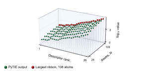
Open-source Python tools (PyTIE) I developed that measure the structure of molecules automatically.
PyTIE_D · PyTIE_DS · PyTIE_SMS_DE · PyTIE_SMS_DSE — GitHub ↗
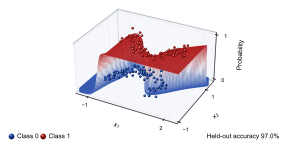
Certified training in using Python for machine learning.
Python Programming for Machine Learning (Certificate No. 1BHGBFVZ)
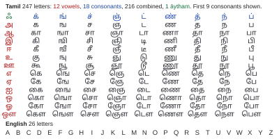
Languages I read, write, and speak fluently.
English · Tamil
Invited lectures, keynote addresses, and conference presentations on chemical reaction networks, mathematical biology, and chemical graph theory.
Dhanalakshmi Srinivasan University, Tiruchirappalli, India · 8 September 2026
Dhanalakshmi Srinivasan University, Tiruchirappalli, India · 27 August 2026
St. Xavier's College (Autonomous), Palayamkottai, India · 5-6 March 2026
Saveetha Engineering College, Chennai, India · 19-20 August 2025
Joint Conference of the Asian Conference on Mathematical Biology & Annual Meeting of the Japanese Society for Mathematical Biology, Kyoto Terrsa, Kyoto, Japan · 11-17 July 2025
Asian Conference for Mathematical Biology, Kyoto Terrsa, Kyoto, Japan · 11-17 July 2025
Japan Geoscience Union Meeting 2025, Makuhari Messe, Chiba, Japan · 29 May 2025
CSRS Interim Progress Report Meeting, RIKEN Yokohama Campus, Yokohama, Japan · 17 November 2025
International Conference on Mathematics and Its Applications (ICMA-2024), Sacred Heart College (Autonomous), Tirupattur, India · 15-16 February 2024
International Conference on Modelling, Simulation and Optimization of Energy Systems (MSOES-2023), Canadian University Dubai, UAE · 17-18 June 2023
International Conference on Recent Developments in Mathematics (ICRDM-2022), Canadian University Dubai, UAE · 24-26 August 2022
Peer-reviewed research in mathematical modelling, topological analysis, molecular descriptors, and computational science.
Chemrxiv(2026)
View PublicationScientific Reports (2026)
View PublicationJournal of Cluster Science (2026)
View PublicationFrontiers in Chemistry (2026)
View PublicationarXiv (2025)
View PublicationNano (2025)
View PublicationMalaysian Journal of Fundamental and Applied Sciences (MJFAS) (2025)
View PublicationCurrent Organic Synthesis (2025)
View PublicationCurrent Organic Synthesis (2025)
View PublicationCurrent Organic Synthesis (2024)
View PublicationMalaysian Journal of Fundamental and Applied Sciences (MJFAS) (2024)
View PublicationJournal of Molecular Structure (2024)
View PublicationACS Omega (2023)
View PublicationMathematics (2023)
View PublicationPolycyclic Aromatic Compounds (2023)
View PublicationMolecular Physics (2023)
View PublicationIf you have any questions or would like to collaborate, please feel free to get in touch.
National Institute for Materials Science (NIMS)
Mathematical Catalysis Research Team
1-1 Namiki, Tsukuba, 305-0044, Japan
Office: WPI-MANA Bldg. W402 · Lab: MANA Bldg. 510